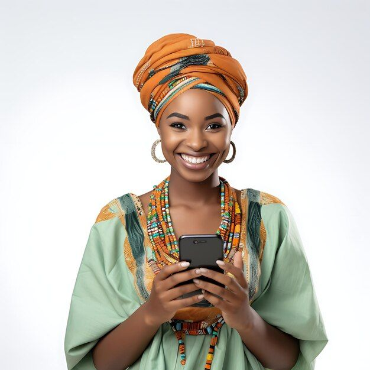

Fondateur:
Deux jeunes professionnels avec des expertises complémentaires : Aminata
Cissokho, une stratège marketing digital expérimentée en agence, et Ham
Guéladio Gueye, un designer UX/UI et développeur web freelance.
Philosophie initiale
Offrir une approche holistique et axée sur la performance pour les PME et
startups, en combinant une forte expertise technique avec une créativité
axée sur les résultats. L'objectif était de créer un "nid" où les marques
pouvaient grandir et prospérer en ligne.
L'histoire de "Visionfluence"(2017-Aujourd'hui)
Les débuts(2017-2018): : L'ère de l'agilité et du marketing de contenu
Contexte de naissance : En 2017, le marketing de contenu, les réseaux sociaux et le SEO (Search Engine Optimization) sont déjà bien établis. L'importance de l'expérience utilisateur (UX) et du design mobile-first est primordiale. L'entreprise ne démarre pas avec la construction de simples sites web, mais avec la création de stratégies numériques complètes.
Premiers services: Visionfluence commence par proposer la création de sites web optimisés pour le référencement naturel et le mobile, la gestion de médias sociaux (Facebook, Instagram principalement), et la production de contenu (articles de blog, visuels). Ils se concentrent sur des clients qui n'ont pas encore une forte présence en ligne ou qui cherchent à la moderniser. Le design est dès le départ centré sur l'utilisateur et l'esthétique moderne.
Différenciation : Leur agilité, leur réactivité et leur capacité à montrer rapidement des résultats concrets (croissance du trafic, engagement sur les réseaux sociaux) leur permettent de se faire une place face à des agences plus établies mais parfois plus lentes.
La croissance et la diversification(2019-2021):Performance et personnalisation
Élargissement des services : Avec l'expérience et la demande des clients, Visionfluence diversifie ses offres. Ils intègrent davantage de services de publicité payante (Google Ads, Social Ads), de l'email marketing automatisé et du marketing d'influence. Le design s'affine avec l'intégration de techniques de design thinking pour résoudre des problèmes business complexes.
L'importance de la data : L'entreprise met l'accent sur l'analyse de données pour optimiser les campagnes et prouver le ROI. Ils aident leurs clients à comprendre leurs audiences grâce à des outils d'analyse et à des tableaux de bord personnalisés.
Recrutement stratégique : L'équipe s'agrandit avec l'arrivée d'experts en analyse de données, de community managers et de développeurs front-end pour renforcer la capacité à créer des expériences utilisateurs immersives.
L'intégration de l'IA et de l'innovation (2022 - Aujourd'hui) : L'ère de l'efficacité augmentée
L'impact de l'IA : Depuis 2022, Visionfluence a rapidement intégré les outils d'intelligence artificielle générative dans ses processus. L'IA est utilisée pour la rédaction assistée de contenu (pour des bases d'articles, slogans), l'optimisation des campagnes publicitaires (ciblage plus précis), la personnalisation d'expériences utilisateurs et même pour des ébauches de design graphique (prototypes rapides, brainstorming visuel).
Services actuels : L'agence propose désormais des audits de maturité digitale, des stratégies de contenu basées sur l'IA, la création de parcours clients omnicanaux, le développement de plateformes web complexes, et des campagnes marketing intégrées pilotées par la donnée. Le design inclut la création d'interfaces pour des applications IA, et l'optimisation des parcours client pour des interactions fluides avec des chatbots, par exemple.
Positionnement : Visionfluence se positionne aujourd'hui comme un partenaire de transformation digitale pour les PME et ETI qui souhaitent non seulement une présence en ligne, mais aussi une croissance mesurable et une expérience client à la pointe de la technologie.
Notre équipe
L’équipe fondatrice et les premiers employés clés sont absolument cruciaux pour notre succès et notre évolution rapide. Voici les cinq personnes les plus importantes et leurs rôles clés, en tenant compte de la période de création et de croissance de l'entreprise :
Aminata Cissokho : Directrice Générale (CEO) & Stratège Marketing Digital
Rôle et Responsabilités : Co-fondatrice de l'entreprise.Aminata est la visionnaire et la force motrice derrière la stratégie marketing de l'agence. Elle est responsable de la direction générale de l'entreprise, de la définition de sa vision et de sa mission, de la prospection de clients majeurs, de la gestion des relations clés et de la supervision de l'équipe marketing. Elle est l'architecte des stratégies digitales globales pour les clients.
Compétences Clés : Forte expérience en agence marketing, expertise en stratégie digitale, développement commercial, leadership, communication client, gestion de projet, et une compréhension approfondie des tendances du marché. Elle sait "vendre" la vision et les résultats de l'agence.
Pourquoi elle est importante : Sans une vision claire et une capacité à attirer les clients et à structurer l'offre marketing, la startup n'aurait pas pu décoller.
Guéladio Gueye : Directeur Technique (CTO) & Lead UX/UI Designer
Rôle et Responsabilités : Co-fondateur.Ham est le cerveau technique et créatif derrière les solutions numériques. Il est responsable de l'architecture technique des projets, du développement web (front-end et back-end), de l'optimisation technique (SEO, performance), et surtout, de la conception de l'expérience utilisateur et de l'interface (UX/UI) pour tous les projets clients. Il assure que les designs ne sont pas seulement beaux, mais aussi fonctionnels et performants.
Compétences Clés : Développement web (HTML, CSS, JavaScript, frameworks), connaissance des CMS (WordPress, Shopify, etc.), expertise en design UX/UI, wireframing, prototypage, compréhension des principes d'ergonomie et de la psychologie de l'utilisateur.
Pourquoi il est important : Il transforme les stratégies marketing en expériences numériques concrètes et efficaces. La qualité technique et l'attrait visuel des livrables dépendent directement de son expertise.
Mame Cheikh Seck : Responsable du Contenu et du Référencement (SEO Content Manager)
Rôle et Responsabilités : Premier recrutement clé (arrivé fin 2017/début 2018).Mame Cheikh est le pilier de la stratégie de contenu et de la visibilité organique. Il est en charge de la recherche de mots-clés, de la rédaction de contenu optimisé pour le SEO (articles de blog, pages web), de l'optimisation technique du référencement sur site, et de la supervision de la performance des contenus. Il travaille en étroite collaboration avec Sarah pour aligner le contenu sur la stratégie marketing et avec Marc pour l'intégration technique.
Compétences Clés : Rédaction web (copywriting), SEO (on-page, off-page, technique), content marketing, analyse de données (Google Analytics, Search Console), maîtrise des outils de SEO (Semrush, Ahrefs, etc.)
Pourquoi il est important : Le contenu est le carburant du marketing digital. Sans une bonne stratégie de contenu et une visibilité organique, les autres efforts marketing seraient moins efficaces.
Anta Sow: Spécialiste Social Media & Engagement
Rôle et Responsabilités : Également un recrutement précoce (début 2018).Anta est le visage de l'agence sur les réseaux sociaux et la voix des marques de leurs clients. Elle est responsable de la stratégie de contenu social media, de la création et de la publication de posts, de l'interaction avec les communautés, de la gestion des campagnes publicitaires sur les réseaux sociaux, et de l'analyse de leur performance.
Compétences Clés : Community management, création de contenu visuel et textuel pour les réseaux sociaux, maîtrise des outils de gestion de réseaux sociaux, social media advertising (Facebook Ads, Instagram Ads), veille concurrentielle, gestion de crise.
Pourquoi elle est importante : Les réseaux sociaux sont un canal d'acquisition et d'engagement client majeur pour les PME et startups. Sa capacité à créer de l'engagement et à gérer la présence des marques est essentielle.
Mariame Dia : Chargée de Projet & Relation Client
Rôle et Responsabilités : Recrutée fin 2018/début 2019. Mariame est la plaque tournante entre l'équipe interne et les clients. Elle est responsable de la planification des projets, du suivi des budgets et des délais, de la communication régulière avec les clients, de la coordination des différentes équipes (marketing, design, développement) et de la résolution des problèmes. Elle assure que les projets avancent de manière fluide et que les clients sont satisfaits.
Compétences Clés : Gestion de projet (méthodologies Agile/Scrum si applicable), communication interpersonnelle, organisation, résolution de problèmes, gestion du temps, sens du service client.
Pourquoi elle est importante : À mesure que l'agence grandit, la gestion des projets et la satisfaction client deviennent complexes. Sophie est garante de la qualité du service et de l'efficacité opérationnelle, permettant à Sarah et Marc de se concentrer sur la stratégie et l'innovation.
Cette équipe de cinq personnes représente les fonctions essentielles et complémentaires qui ont permis à "Visionfluence" de s'établir et de croître rapidement dans le paysage numérique post-2017, en couvrant les aspects stratégiques, techniques, créatifs, marketing et opérationnels.
Témoignages
De sa création à nos jour, Visionfluence a su marquer des esprits à travers son professionnalisme et les valeurs qu’elle incarne.Voici des retours d'expériences de clients et partenaires qui ont collaboré avec Visionfluence à différentes étapes de son développement :

Mme. Aïcha Fall, Fondatrice de "Teranga Mode" (Boutique de vêtements éthiques en ligne)
"Quand j'ai lancé Teranga Mode en 2018, mon site était fonctionnel, mais il manquait cruellement de visibilité. J'ai choisi The Digital Nest parce qu'ils avaient une approche très pragmatique. Aminata et Mame Cheikh ont complètement refondé notre stratégie de contenu et de SEO. En moins de six mois, notre trafic organique a doublé, et nos ventes ont commencé à décoller grâce à leur travail sur les fiches produits et les articles de blog. Le design de Ham a rendu notre site bien plus attractif et facile à utiliser. Ils ont vraiment compris notre vision éthique et l'ont traduite en ligne. C'était un véritable partenariat, pas juste un prestataire."
M. Omar Diop, "Dakar Lifestyle" (Influenceur Lifestyle et Voyage)
"J'ai eu l'occasion de collaborer avec Visionfluence sur plusieurs campagnes d'influence pour leurs clients en 2019. J'ai été très impressionné par leur professionnalisme, en particulier celui de Fatima. Les briefs étaient clairs, les attentes bien définies, et ils géraient toute la logistique de manière impeccable. Ce n'est pas toujours le cas avec toutes les agences ! Ils savaient comment intégrer l'influence marketing dans une stratégie globale, ce qui rendait les collaborations d'autant plus efficaces et authentiques pour ma communauté."
Mme. Aminata Traoré, Ancienne Spécialiste Acquisition Digitale chez Visionfluence (2020-2023)
"J'ai rejoint Visionfluence en 2020, au moment où l'agence mettait un fort accent sur la performance et la publicité payante. L'environnement de travail était incroyablement stimulant. Sarah et Marc encourageaient l'innovation et l'apprentissage continu. J'ai pu expérimenter de nouvelles stratégies sur Google Ads et les Social Ads, avec un accès direct aux données pour prouver nos résultats. Sophie, la chef de projet, était essentielle pour coordonner les équipes et s'assurer que les campagnes étaient lancées sans accroc. J'ai beaucoup appris sur l'importance de l'analyse de données pour prendre des décisions marketing."
M. Philippe Moreau, Directeur Marketing de "Senegal Services Plus"
"Nous avons fait appel à Visionfluence en 2022 pour nous aider dans notre transformation digitale, notamment l'intégration de l'IA pour personnaliser l'expérience de nos utilisateurs. Ils ont démontré une expertise pointue, non seulement sur l'aspect technique de l'IA, mais aussi sur la manière de la traduire en parcours client intuitifs et en stratégies marketing innovantes. Leur approche design-thinking, menée par Ham, a été très efficace pour résoudre nos défis. Ce qui distingue Visionfluence, c'est leur capacité à anticiper les tendances et à les intégrer rapidement pour leurs clients. Ils sont devenus un partenaire stratégique indispensable."
Ces témoignages montrent comment "visionfluence" a su s'adapter et fournir de la valeur à différents types de collaborateurs, confirmant leur expertise en marketing digital, design, et leur capacité à innover, notamment avec l'intégration de l'IA.